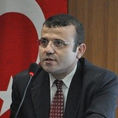

Harun Yıldız

Prof. Dr. Harun Yıldız
Özgeçmiş
1982-83 öğretim yılında Samsun'da Necatibey İlkokulu'ndan mezun oldu.
1988-89 öğretim yılında Samsun 50. Yıl Lisesi'nden mezun oldu.
1994 yılında Ondokuz Mayıs Üniversitesi İlahiyat Fakültesi'nden mezun oldu.
1994 ile 1997 yılları arasında Van ve Samsun'da çeşitli okullarda öğretmenlik yaptı.
1997 yılında Ondokuz Mayıs Üniversitesi Sosyal Bilimler Enstitüsü'ne Araştırma Görevlisi olarak atandı.
1998 yılında "İlk Dönem Haricilerinin Doğuşunu Etkileyen Sosyo-Kültürel Faktörler" adlı tezi ile Yüksek Lisans'ını tamamladı.
2003 yılında "Amasya Yöresi Alevileri Tarihçesi, İnançları, Örf ve Adetleri" adlı tezi ile doktorasını tamamlayarak Bilim Doktoru ünvanını aldı.
2005 yılında askerlik görevini Şanlıurfa'da yerine getirdi.
Aralık 2008'de doçent ünvanını aldı.
2015 yılı Ocak ayında Profesör oldu.
Yine 2015 yılında İngilizce'sini geliştirmek ve sahasında araştırma yapmak üzere İngiltere'de bulundu.
Halen Ondokuz Mayıs Üniversitesi İlahiyat Fakültesi'nde öğretim üyesi olarak görevini sürdürmektedir.
İngilizce ve Arapça bilmektedir.
Bir çok dergide hem danışma, hem de hakem kurulu üyeliği bulunmaktadır.
Yayımlanmış kitaplarının yanı sıra, çok sayıda makale ve çevirisi vardır. Ayrıca, alanı ile ilgili pek çok ulusal ve uluslar arası bilimsel organizasyona katılmıştır.
Evli ve iki çocuk babasıdır.
BİLİMSEL ÇALIŞMA VE YAYINLAR
A. Kitaplar
1) Sâlim b. Zekvân es-Sîre Bir Hâricî/İbâdî Klasiği (Çeviri - İnceleme), Ankara Okulu Yay., Ank., 2016.
2) Geleneksel Algıdan Gerçekliğe Hacı Bektaş Velî - Tarihsel Bir Yaklaşım, Çizgi Kitabevi yay., Konya, 2016.
3) Anadolu Aleviliği - Amasya Yöresi Bağlamında Bir İnceleme, Ankara Okulu Yay., Ank. 2014.
4) Kendi Kaynakları Işığında Hâricîliğin Doğuşu ve Gelişimi, Araştırma Yay., Ank. 2010.
5) Din, Siyaset ve İdeoloji - Haricilik Düşüncesinin Doğuşu, Sidre Yay., Samsun, 1999.
B. Kitap Bölümleri
1) "Alevî Geleneğinde Ölüm ve Ölüm Sonrası Uygulamalar", Defin, (Ed. Emine Gürsoy Naskali), Tarihçi Kitabevi, İst., 2012.
2) "Türkiye Alevîliği'nin İnanç ve Ahlakî Değerleri", Anadolu'da Aleviliğin Dünü ve Bugünü, (Ed. H. İbrahim Bulut), Sakarya Üniversitesi Yay., Sakarya, 2010.
3) "Alevî-Bektaşî Geleneğinde Musahiplik", Geçmişten Günümüze Alevî-Bektaşî Kültürü, (Ed. Ahmet Yaşar Ocak), Kültür ve Turizm Bakanlığı Yay., Ank., 2009.
4) "Alevî-Bektaşî Toplumlarında Bayramlar", Geçmişten Günümüze Alevî-Bektaşî Kültürü, (Ed. Ahmet Yaşar Ocak), Kültür ve Turizm Bakanlığı Yay., Ank., 2009.
5) "Alevî Toplumunda Dedelik", Alevilik, (Haz. İsmail Engin/Havva Engin), Kitap Yay. İst. 2004.
C. Uluslararası Bilimsel Toplantılarda Sunulan Bildiriler
1) "Şah İbrahim Velî Ocağı'nın Amasya Yöresindeki İzdüşümleri", 1. Uluslar arası Şah İbrahim Velî Sempozyumu, Malatya Kongre ve Kültür Merkezi, 29 Eylül-1 Ekim 2011, Malatya.
2) "İslam Kültüründeki Otoriteryen Geleneğin Kaynakları Üzerine Bazı Düşünceler", Bilim, Ahlak ve Sanat Bağlamında Çağdaş İslam Algıları, Ondokuz Mayıs Üniversitesi İlahiyat Fakültesi, (26-28 Kasım 2010), II, 61-79, Samsun, 2011.
3) "Alevî/Bektaşî Kültüründe İnanç Merkezleri: Amasya Yöresi Örneği", I. Uluslararası Hacı Bektaş Veli Sempozyumu, Hitit Üniversitesi Hacı Bektaş Veli Araştırma ve Uygulama Merkezi, (07-09 Mayıs 2010, Çorum), I, 267-285, Ankara, 2011.
4) "Sâlim b. Zekvân'ın Sîre Adlı Eserinde Hz. Ali ve Dönemine Bakış", Uluslar arası Hz. Ali Sempozyumu, Dokuz Eylül Üniversitesi, 18-20 Aralık 2009, İzmir.
5) "Hacı Bektaş Velî ile Ahi Evran İlişkisi", Doğumunun 800. Yılında Hacı Bektaş Veli Sempozyumu (Nevşehir, 17-18 Ağustos 2009) Bildiriler, 109-134, Atatürk Kültür Merkezi, Ankara, 2010.
6) "Alevî-Bektaşî Geleneğinde Düşkünlük", 2. Uluslar arası Türk Kültür Evreninde Alevilik ve Bektaşilik Bilgi Şöleni, 17-18-19 Ekim 2007 Bildiri Kitabı, II, 1247-1260, Ankara, 2007.
7) "Alevî/Bektaşî Geleneğinde Musahiplik", Uluslar arası Bektaşilik Alevilik Sempozyumu I, 28-30 Ekim 2005 Bildiriler - Müzakereler, 123-132, Isparta, 2005.
8) "Alevî Geleneğinde Ölüm ve Ölüm Sonrası Uygulamalar", Uluslar arası Türk Kültüründe Ölüm Sempozyumu, Marmara Üniversitesi Türkiyat Araştırma Merkezi, 25-26 Kasım 2004, İst. 2004.
D. Uluslararası Hakemli Dergilerde Yayınlanan Makaleler
1) "Şah İbrahim Velî Ocağı'nın Amasya Yöresindeki İzdüşümleri", Hacı Bektaş Velî Araştırma Dergisi, 63, 127-138, (Güz 2012).
2) "Hacı Bektaş Velî ile Ahi Evran İlişkisi", Hacı Bektaş Velî Araştırma Dergisi, 61, 187-206, (Bahar 2012).
3) "Amasya Yöresi Alevî Ocakları", Uluslararası Sosyal Araştırmalar Dergisi, IV/19, 283-297, (Güz 2011).
4) "Amasya Yöresi Örneğinde Alevî/Bektaşî Kültüründe İnanç Merkezleri", Uluslararası Sosyal Araştırmalar Dergisi, IV/16, 471-480, (Kış 2011).
E. Ulusal Hakemli Dergilerde Yayınlanan Makaleler
1) "Hâricîler'in Erken Dönem Tarih Algısı: Sâlim b. Zekvân Örneği", e-Makâlât Mezhep Araştırmaları Dergisi, II/2, 7-40, (Güz 2009).
2) "Tarihten Günümüze Anadolu Aleviliği", Ondokuz Mayıs Üniversitesi İlahiyat Fakültesi Dergisi, 26-27, 11-24, (2008).
3) "Anadolu Alevîliğinin Yazılı Kaynaklarına Bir Bakış", Hacı Bektaş Velî Araştırma Dergisi, 30, 323-359, (2004).
4) "Ehl-i Beyt İnanışının Anadolu Alevîleri Üzerindeki İzdüşümleri", Marife Dergisi, 4:3, 297-317, (2004).
5) "Hâricîlerin Doğuşunda Kurrâ'nın Rolü", EKEV Akademi Dergisi, 8:18, 263-282, (2004).
6) "Alevi Geleneğinde Ölüm ve Ölüm Sonrası Tören ve Ritüeller", Hacı Bektaş Velî Araştırma Dergisi, 42, 93-112, (2007).
F. Ulusal Bilimsel Toplantılarda Sunulan Bildiriler
1) "Samsun Yöresi Alevîleri: Gelenek ve Değişim", Samsun Sempozyumu, Ondokuz Mayıs Üniversitesi, 13-16 Ekim 2011, Samsun.
2) "Alevî/Bektaşî Geleneğinde Âyin-i Cem", 1. Kırşehir Kültür Araştırmaları Sempozyumu, 583-597, Kırşehir, 2004.
G. Diğer Yayınlar, Kitap Tanıtım ve Eleştirileri
1) "Bektaşi Erkânnâmelerinde Mezhebi Unsurlar", Hacı Bektaş Velî Araştırma Dergisi, 55, 471-476, (Yaz 2010).
2) "Alevilik ile ilgili Kavram ve Deyişler", http://www.kanalkultur.com/, 22.06.2008
3) "Hurûfîlik ve Kur'an, Nesimî Örneği", Mustafa Ünver, Kitap Haber Dergisi, 18, 99, (2003).
4) "Günümüz Aleviliği Üzerine", İlyas Üzüm, Cem Dergisi, 82, 30, (1998).
5) "Sosyal Çözülme ve Din", Vejdi Bilgin, Kitap Dergisi, 91, 37-38, (1998).
6) "İslâm'ın Kutsal Mabetleri", Yılmaz Can, Kitap Haber Dergisi, 10, 15, (1999).
H. Çeviriler
1) "Kızılbaş Türkmenler: Safevî Teokrasisinin Kurucuları ve Kurbanları", Hans Roemer'den, Hacı Bektaş Velî Araştırma Dergisi, XXXVIII, 81-92, (2006).
2) "İslam Toplumuna Mensubiyetin Şartları", W. Montgomery Watt'tan, Ondokuz Mayıs Üniversitesi İlahiyat Fakültesi Dergisi, XVI, 429-435, (2003).
3) "Osmanlı İmparatorluğunda Bir Kent Ereni: Merzifonlu Pîrî Baba", Suraiya Faroqhi'den, Hacı Bektaş Velî Araştırma Dergisi, XVIII, 119-140, (2001).
4) "Hâricîlerin Doğuşu", Selim Nu'aymî'den, Ondokuz Mayıs Üniversitesi İlahiyat Fakültesi Dergisi, X, 513-536, (1998).
5) "Hâricîlerin Temel Görüşleri", Ebû'l-Hasan el-Eş'arî'den, Ondokuz Mayıs Üniversitesi İlahiyat Fakültesi Dergisi, IX, 351-356, (1997).
I. Yönetilen Tezler
1) Adem Özkurt, Nevbahtî'nin Fıraku'ş-Şîası'nda Şiî Mezheplere Yaklaşımı, (Yüksek Lisans Tezi) Ondokuz Mayıs Üniversitesi Sosyal Bilimler Enstitüsü, 2010.
2) Mehmet Sever, Sa'dettin Taftâzânî'nin İmamet Anlayışı ve İlk Dönem Siyasi Olayları Değerlendirişi, Ondokuz Mayıs Üniversitesi Sosyal Bilimler Enstitüsü, 2012.
3) Ümit Erkan, 16. Yüzyılda Kızılbaş Ayaklanmaları, (Doktora Tezi), Ondokuz Mayıs Üniversitesi Sosyal Bilimler Enstitüsü, 2014.
4) Durmuş Akman, Hâricî Fırkalarından Necedât'ın Doğuşu ve Başlıca Görüşleri, (Yüksek Lisans Tezi), Ondokuz Mayıs Üniversitesi Sosyal Bilimler Enstitüsü, 2014.
5) Ferhat Maden, Şiî Mezheplerde Hulûl Anlayışı, (Yüksek Lisans Tezi), Ondokuz Mayıs Üniversitesi Sosyal Bilimler Enstitüsü, 2015.
6) Mustafa Küçük, Cehm b. Safvan'ın İman Anlayışı, (Yüksek Lisans Tezi - devam ediyor).
Eserleri ve danışmanlıkları
Amasya Yöresi Alevileri Tarihçesi, İnançları, Örf ve Adetleri
Harun Yıldız · 2003 · Ondokuz Mayıs Ü. SBE.
İlk Dönem Hâricîlerinin Doğuşunu Etkileyen Sosyo-Kültürel Faktörler
Harun Yıldız · 1998 · Ondokuz Mayıs Ü. SBE.
XVI. Yüzyılda Osmanlıda Kızılbaş Ayaklanmaları
Ümit Erkan · Ondokuz Mayıs Ü. SBE.
İlgili haberler
Yeni Doktor: Salih KALKAN
Erciyes Üniversitesi Sosyal Bilimler Enstitüsü bünyesinde Prof. Dr. Muharrem Akoğlu danışmanlığında Modern İslam Düşüncesinin Teşekkülünde Oryantalizmin Etkisi: Seyyid Ahmed Han Örneği başlıklı teziyle Salih KALKAN, Prof. Dr. Harun Yıldız, Prof. Dr. Hakkı Büyü
Yeni Prof: Harun YILDIZ
Samsun Ondokuz Mayıs Ü. İlahiyat Fakültesinden Harun YILDIZ hocamız, 13 Ocak 2015 tarihi itibarıyla Profesör kadrosuna atanmıştır. Hocamızı tebrik ediyor, Kendisine, Fakültesine ve tüm Mezhepler Tarihi camiasına hayırlı olması temennisiyle, Nice güzel çalışmal
Yeni Doktor: Ümit ERKAN
Recep Tayyip Erdoğan Üniversitesi İlahiyat Fakültesi İslam Mezhepleri Anabilim dalı araştırma görevlisi Ümit ERKAN, Ondokuz Mayıs Üniversitesi Sosyal Bilimler Enstitüsünde Doç. Dr. Harun YILDIZ danışmanlığında tamamladığı 16. YÜZYILDA OSMANLI’DA KIZILBAŞ AYAKL
25 Aralık 2008 İki Yeni Doçent
Kayseri İlahiyat'tan Muharrem Akoğlu ve Samsun İlahiyat'tan Harun Yıldız; Prof. Dr. M. Saffet SARIKAYA, Prof. Dr. Sayın DALKIRAN, Prof. Dr. Mehmet Ali BÜYÜKKARA'dan oluşan jüri tarafından başarılı bulunarak 25 Aralık 2008 tarihi itibarıyla İslam Mezhepleri Tar